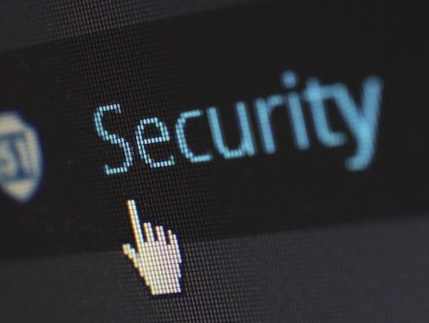

Surveillance and Rescue Operation
Drones have become an indispensable tool for surveillance and rescue operations, providing a new level of situational awareness and operational efficiency. Whether you're conducting a search and rescue mission or monitoring a high-security area, a drone can provide valuable real-time information and imagery that can make all the difference in a critical situation.
Equipped with high-resolution cameras, infrared sensors, and other specialized equipment, drones can quickly and safely survey large areas, providing an unprecedented level of visibility and detail. This makes them an ideal tool for emergency responders, law enforcement agencies, and security personnel who need to rapidly assess and respond to situations.
Furthermore, drones can be deployed in dangerous or hard-to-reach areas, such as rugged terrain or disaster zones, where traditional surveillance and rescue methods may be impractical or impossible. With their ability to cover large areas quickly and efficiently, drones can help save lives and protect property by providing critical information and situational awareness.
Investing in a drone for surveillance and rescue operations is a smart decision that offers enhanced capabilities, improved safety, and increased efficiency in emergency situations. So why wait? Take advantage of this innovative technology and equip your team with the tools they need to respond quickly and effectively to any situation.

Safety and Security
Drone surveillance is used for safety and security purposes in various industries, including public safety, border security, and critical infrastructure protection. Drones equipped with high-resolution cameras and thermal imaging sensors can capture real-time images and data of a specific area, allowing for better situational awareness and early detection of potential safety and security threats. Additionally, drones can be used for crowd monitoring, emergency response, and search and rescue operations, providing valuable data to first responders and helping to coordinate rescue efforts.
Defence
Drones have become increasingly important in the defence sector as they can be used for a wide range of applications such as intelligence, surveillance, and reconnaissance (ISR), target acquisition, and situational awareness. Drones equipped with high-resolution cameras, infrared sensors, and radar can provide real-time images and data of a specific area, allowing for better situational awareness and early detection of potential threats. They can also be used for border surveillance, convoy protection, and battlefield mapping